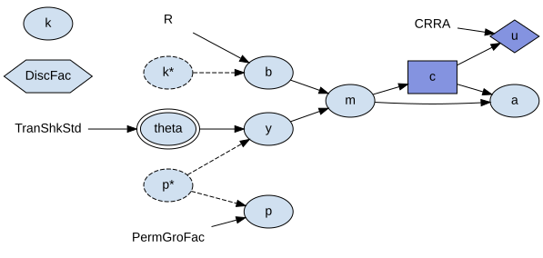
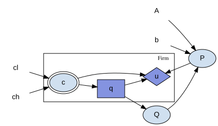
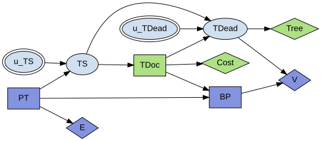

Reading Model Diagrams¶
A block can draw itself as a diagram: nodes for its shocks, states, controls, rewards, and parameters, and edges for the structural equations that connect them. This page is a legend for that diagram. It explains what each shape, color, and box means, names the graphical conventions the notation borrows, and points to where the drawing style is configured. It does not walk through the visualizer’s code; for that, see Model Analysis and Visualization.
Producing a Diagram¶
The usual way to see a diagram is from a notebook:
block.display(calibration)
Block.visualize(calibration, title=None, discount=None) returns the visualizer
object instead of displaying it, which is useful when you want to inspect or
further customize it. title defaults to the block’s name; pass title="" if
you are supplying your own caption.
To render onto a matplotlib figure – for a script, or a documentation gallery
– use
skagent.utils.plot_block_diagram(block, title=None, calibration=None, figsize=(9, 7), discount=None).
The calibration argument is what tells the diagram which symbols are
calibration parameters rather than dynamic variables, so it decides which shapes
are drawn. display and visualize require it; plot_block_diagram treats it
as empty when it is left out.
If the block’s problem has a discount factor, pass its calibration symbol as
discount=, so it is drawn as a hexagon rather than as an ordinary parameter. A
block cannot work this out on its own – the discount variable is a choice made
by the period built over the block, not a fact recorded on the block itself –
so it has to be supplied. When you already have a BellmanPeriod, its
discount_variable attribute is the value to pass.
The Shape Vocabulary¶
Every node in the diagram is one of six kinds, distinguished by shape:
Kind |
Shape |
Notes |
|---|---|---|
Shock |
ellipse, double border |
drawn with two peripheries |
State / computed value |
ellipse |
the default shape |
Control |
box |
|
Reward |
diamond |
|
Discount factor |
hexagon |
reserved for the one discount-factor variable |
Calibration parameter |
name only, no border, no fill |
|
Edges run from a variable’s inputs to the variable itself, so an edge is a causal dependency read directly off the block’s structural equations.

Above, a consumption-saving block with every shape in it: theta is the shock,
c the control, u the reward, DiscFac the discount factor, the bare names
are calibration parameters, and the rest are computed values.
Color, Dashing, and Layout¶
Nodes are filled with a color per agent, so a multi-agent model shows at a glance which agent’s role owns which control and reward. The colors are generated by a sweep over hue rather than assigned by hand, so the same agent always gets the same color across a run but the color itself carries no meaning beyond “same agent” – do not read anything into which agent got which hue.
A node whose name ends in *, drawn with a dashed outline, is an arrival value:
the variable as it stood at the end of the previous period, entering this one as
a lag. Edges leaving such a node are dashed too, and its tooltip is prefixed
“Previous period “. A symbol the block reads but never assigns appears twice for
this reason – once as the dashed * node its equations read, and once as a
bare node for the current period, which this block does not assign. See
Block Guide for what an arrival state is in the block model itself.
The graph lays out left to right, so causal flow within a period reads in the same direction as the equations that produced it.
Entity Classes as Plates¶
When a block’s variables belong to an entity class, the diagram draws a labelled box around them, one box per class, holding the class’s own variables and their edges. An edge that leaves the box is an aggregation – some axis-free equation reading out of the class, the kind of crossing described in Block Guide.

Above, a Cournot market: the Firm box holds the variables each firm has its
own copy of, and the edge from q to Q leaves the box, which is the
aggregation over the class. P is outside the box because there is one price,
not one per firm, and it feeds back into every firm’s u.
The box’s label is the class’s name only. It deliberately does not carry the class’s size. The diagram carries no other number from the calibration either, and putting one on this box alone would suggest the picture had been drawn for one particular calibration rather than for the model in general.
What Is Not Drawn¶
A calibration parameter that no equation in the block actually reads is left off the diagram. Such a parameter is usually an artifact of a calibration dictionary written for a whole family of blocks, where using one block still carries along parameters meant for the others; drawing it would add a node connected to nothing, which is not a fact about this block.
Nothing else is dropped this way. An unread shock, state, control, or reward is not treated as an artifact – it is a defect in the model, and the diagram is exactly where it should be visible. Likewise, a variable named as the discount factor is always kept, even if no equation reads it, since it is still part of the problem being solved.
Precedent¶
The notation is not new. Two conventions are borrowed directly, and knowing where each one comes from tells you what you are allowed to read off the picture.
Multi-agent influence diagrams¶
The shape vocabulary – decision, chance, and utility nodes drawn differently,
connected by directed edges for causal dependence, with each agent’s nodes in
their own color – is the multi-agent influence diagram of Koller and Milch,
“Multi-Agent Influence Diagrams for Representing and Solving Games” (IJCAI-01;
Games and Economic Behavior 45(1), 2003). That is where the notation comes from,
and skagent.models.macid encodes several of the games from that literature
directly, the tree-killer example among them.
This is more than a borrowed drawing style: a block, read structurally, already
has the form these diagrams describe, which is why the picture is faithful
rather than illustrative. skagent.influence builds that structural reading –
a structural causal influence model, after Everitt, Carey, Langlois, Ortega and
Legg, “Agent Incentives: A Causal Perspective” (AAAI-21; arXiv:2102.01685),
which is an influence diagram whose mechanisms are functions of their parents
rather than conditional probability tables. A block’s dynamics are already
written that way.

Above, the tree-killer game. Each agent’s nodes carry their own color, so the two decision boxes belonging to one agent are distinguishable at a glance from the other’s, and each diamond is owned by whoever it pays.
Plate notation, for entity classes¶
The box drawn around an entity class is plate notation, the same device used in graphical-model tools such as PyMC and Pyro. A plate is a template: its meaning is the “ground” graph it expands to, one copy of every variable inside it per instance of the class, with an aggregating variable outside the plate taking all of those copies as parents. The compact box-and-edges drawing is that ground graph collapsed by exchangeability among the copies.
scikit-agent calls these groupings entity classes rather than plates; it is the drawing convention, not the name, that is borrowed.
Configuring the Style¶
The shapes, colors, and layout described above are not hard-coded. They live in
src/skagent/model_visualization_config.yaml, shipped with the package. That
file holds the shape assigned to each variable kind, the node and edge styles
(including the double border on shocks and the dashed style for arrival values),
the parameters of the color-generation sweep, and the layout settings such as
left-to-right ranking and the plate label’s font size. To change how diagrams
are drawn by default, edit that file.
Seeing It Rendered¶
The figures above are small models chosen to show one thing each. For diagrams of models being put to work, with the surrounding analysis, see the gallery:
Cournot: Solving for a Nash Equilibrium shows an entity class drawn as a plate, with an edge leaving it for the aggregation.
Strategic Relevance: Solving the Tree Killer shows a multi-agent influence diagram with two agents.
Lemons: Adverse Selection, and Three Markets That Look Alike shows a larger model that includes an entity class.
For the class and function reference behind the diagram, see Model Analysis and Visualization.